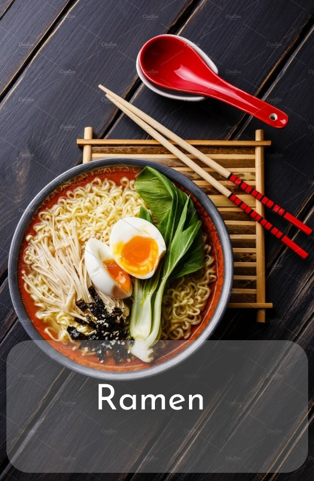

Ramen
Ingredients
- 4 cups chicken or vegetable broth
- 2 cups water
- 2 packs of ramen noodles (discard the seasoning packets or save for another use)
- 2 tablespoons soy sauce/li>
- 1 tablespoon miso paste (optional, for extra flavor)
- 1 tablespoon sesame oil
- 2 cloves garlic, minced
- 1-inch piece of ginger, grated
- 2 green onions, chopped
- Toppings (optional): Sliced cooked chicken, pork, or tofu, Soft-boiled or hard-boiled eggs, Sliced mushrooms, Baby spinach or other leafy greens, Corn kernels, Bamboo shoots, Nori (seaweed sheets), Toasted sesame seeds, Chili oil or sriracha (for spice)
Instructions
- Prepare the broth: In a large pot, combine the chicken or vegetable broth with water. Bring to a simmer over medium heat.
- Add flavorings: Stir in the soy sauce, miso paste (if using), sesame oil, minced garlic, and grated ginger. Let the broth simmer for about 10-15 minutes to allow the flavors to meld together.
- Cook the noodles: While the broth is simmering, cook the ramen noodles according to the package instructions in a separate pot. Once cooked, drain and set aside.
- Assemble the ramen bowls: Divide the cooked noodles among serving bowls. Ladle the hot broth over the noodles, ensuring that each bowl gets a generous amount of broth.
- Add toppings: Customize your ramen bowls with your choice of toppings. This could include sliced cooked chicken, pork, or tofu, soft-boiled or hard-boiled eggs, sliced mushrooms, baby spinach or other leafy greens, corn kernels, bamboo shoots, nori, toasted sesame seeds, and a drizzle of chili oil or sriracha for heat.
- Serve: Serve the ramen hot, garnished with chopped green onions for added freshness.